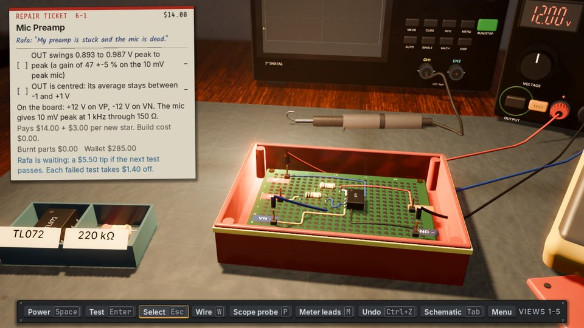
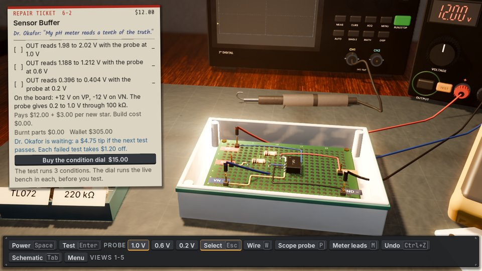
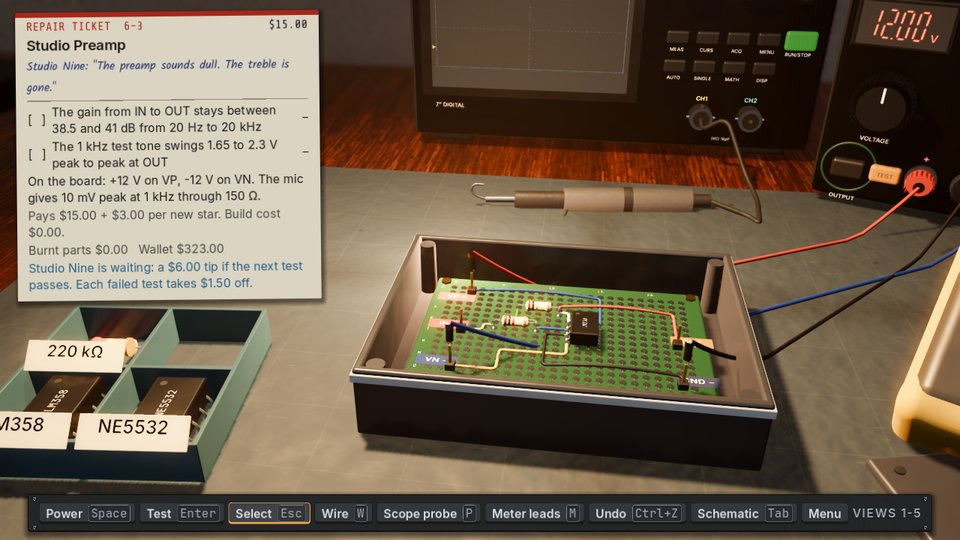
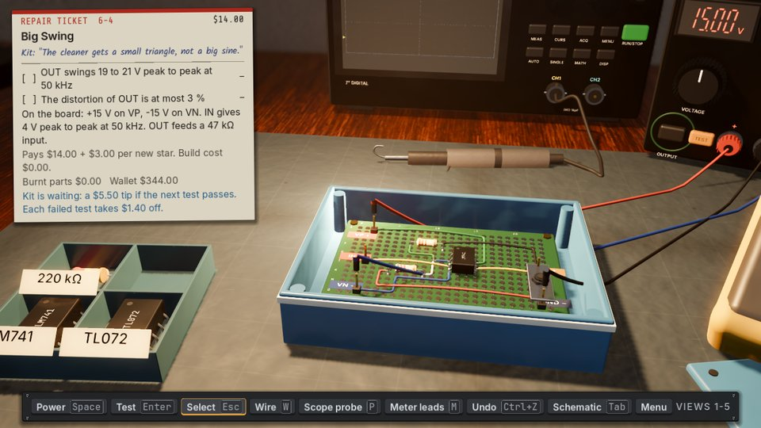
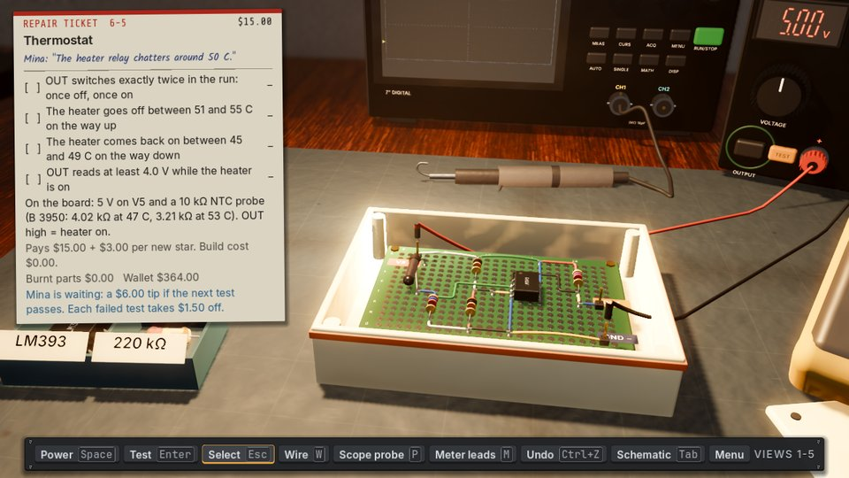
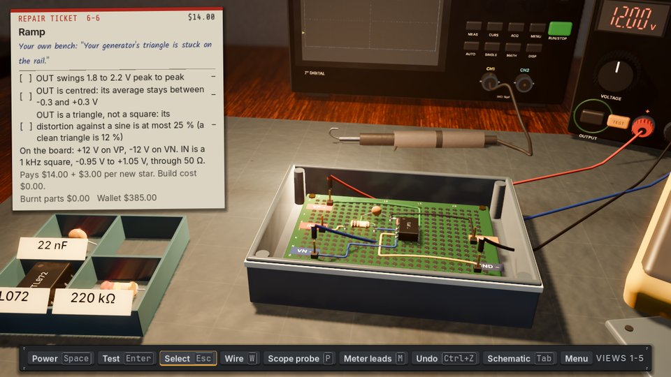
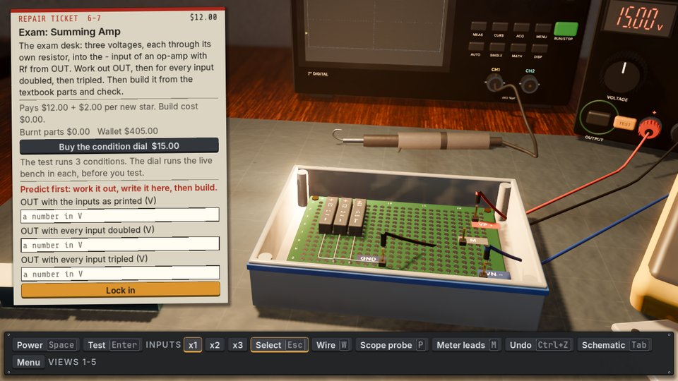

Wiki / Chapter 6
Chapter 6 · Op-Amp Alley
Wren's sixth page: six repairs and an exam, all with op-amps. A mic preamp, a pH meter, a studio preamp, a piezo driver, a thermostat and your own generator came in broken.
6-1 · Mic Preamp

Rafa busks with a dynamic mic. Its preamp should turn the mic's 10 mV into 470 mV (an inverting gain of 47), but the output is stuck at one rail and the mic does nothing. Find out why and fix it.
On the bench: A TL072 on +-12 V. Look where the 470 k feedback resistor lands: pin 3 is the + input.
The bench checks
- OUT swings 0.893 to 0.987 V peak to peak (a gain of 47 +-5 % on the 10 mV peak mic)
- OUT is centred: its average stays between -1 and +1 V
Parts tray: TL072 dual op-amp, Carbon-film resistor 5 %
6-2 · Sensor Buffer

Dr. Okafor's pH meter reads about a tenth of what it should, and below zero. The probe gives 0.2 to 1.0 V but only through 100 kΩ, so it cannot drive any current. The meter wants exactly twice the probe's voltage (+-1 %).
On the bench: The probe feeds 10 k into pin 2, and the probe itself sits behind 100 k.
The bench checks
- OUT reads 1.98 to 2.02 V with the probe at 1.0 V
- OUT reads 1.188 to 1.212 V with the probe at 0.6 V
- OUT reads 0.396 to 0.404 V with the probe at 0.2 V
Parts tray: TL072 dual op-amp, Carbon-film resistor 5 %
6-3 · Studio Preamp

Studio Nine wants 40 dB of gain (x100), flat from 20 Hz to 20 kHz, from one LM358 (two op-amps in one chip). The preamp they built sounds dull: the treble is gone. The bench sweeps it from 20 Hz to 20 kHz.
On the bench: One LM358 stage at a gain of 100. The second op-amp in the chip (pins 5 to 7) is unused.
The bench checks
- The gain from IN to OUT stays between 38.5 and 41 dB from 20 Hz to 20 kHz
- The 1 kHz test tone swings 1.65 to 2.3 V peak to peak at OUT
Parts tray: LM358 dual op-amp, NE5532 dual op-amp, Carbon-film resistor 5 %
6-4 · Big Swing

Kit's ultrasonic cleaner drives its piezo with 20 V peak to peak at 50 kHz, made from a 4 V peak-to-peak signal (a gain of 5). The output came back a small triangle instead of a big sine.
On the bench: An LM741 drives the cleaner. Clip the scope on OUT and look at the shape.
The bench checks
- OUT swings 19 to 21 V peak to peak at 50 kHz
- The distortion of OUT is at most 3 %
Parts tray: LM741 op-amp, TL072 dual op-amp, Carbon-film resistor 5 %
6-5 · Thermostat

Mina's science-fair incubator should heat below 47 C and stop above 53 C. Instead the heater relay chatters around 50 C. The bench warms the probe from 40 to 60 C and cools it back, with some noise on the probe.
On the bench: The NTC probe sits on the 5 V pad. An LM393 compares it with half of 5 V, with nothing from OUT back to pin 3.
The bench checks
- OUT switches exactly twice in the run: once off, once on
- The heater goes off between 51 and 55 C on the way up
- The heater comes back on between 45 and 49 C on the way down
- OUT reads at least 4.0 V while the heater is on
Parts tray: LM393 dual comparator, Carbon-film resistor 5 %
6-6 · Ramp

Your own function generator makes its triangle by integrating its square wave. The triangle has gone wrong: it sits down at the -10.5 V rail, flattened. The square is +-1 V at 1 kHz, but it carries 50 mV of DC it should not.
On the bench: Your own generator. 11 k in, 22 nF from OUT to pin 2, and nothing else across the capacitor.
The bench checks
- OUT swings 1.8 to 2.2 V peak to peak
- OUT is centred: its average stays between -0.3 and +0.3 V
- OUT is a triangle, not a square: its distortion against a sine is at most 25 % (a clean triangle is 12 %)
Parts tray: TL072 dual op-amp, Carbon-film resistor 5 %, Ceramic capacitor
6-7 · Exam: Summing Amp exam

The exam desk: three voltages, each through its own resistor, into the - input of an op-amp with Rf from OUT. Work out OUT, then for every input doubled, then tripled. Then build it from the textbook parts and check.
On the bench: Predict first, then build and probe.
The bench checks
- OUT with the inputs as printed (V)
- OUT with every input doubled (V)
- OUT with every input tripled (V)
- M reads -4.75 V (+-1 %) with the inputs as printed
- M reads -9.50 V (+-1 %) with every input doubled
- M reads -14.25 V (+-1 %) with every input tripled
Parts tray: Exact resistor, Textbook op-amp